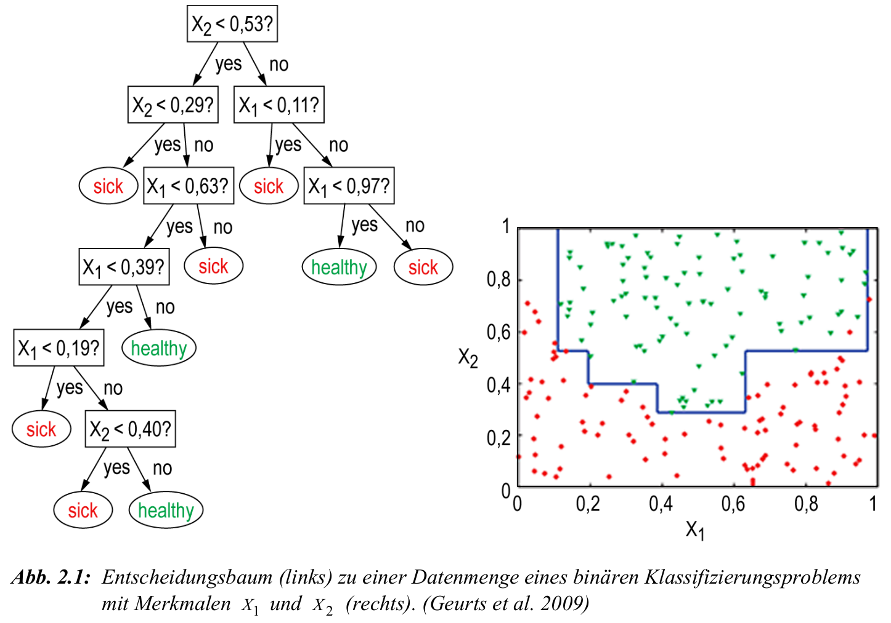
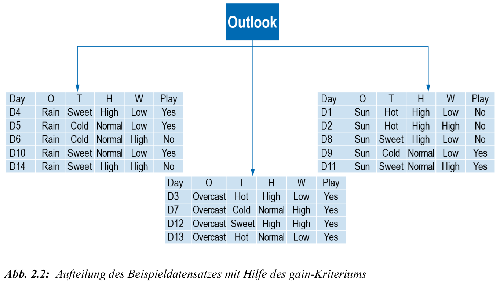

Entscheidungsbäume: Grundidee
Struktur zur Klassifikation oder Regression basierend auf Tests auf Attributwerten \(X_j\) \(\Rightarrow\) typische Anwendungen:
- medizinische Diagnose
- Kreditwürdigkeitsprüfung
- Zielgruppenklassifikation im Marketing
Ziel: herleitung einer regel, die Objekte korrekt einer Klasse \(K_m\) zuordnet
jeder Pfad: Folge von Tests \(T_1, T_2, \dots\) auf Attribute; daraus entstehen Zweige, die zu einem Blatt führen
formale Sicht: Entscheidungsbaum als Funktion zum Beispiel: \(f : \mathcal{X} \rightarrow \mathcal{Y}\) \[\begin{align*} f:~ \mathbb{R}^p &\rightarrow \{1, \dots, K\}\\ \bs{X} &\mapsto K_m \end{align*}\]
Durch sukzessive Anwendung der Tests \(T_1, T_2,\ldots\) erhalten wir eine Aufteilung des Merkmalsraums \(\mathcal{X}\) in disjunkte Regionen \(R_1, \dots, R_M\) und somit am Ende \(f(\bs{X}) = K_m\) für potentielle komplett neue Objekte
jedes Objekt wird eindeutig einem Blatt mit Klassenlabel zugeordnet
Wurzelknoten: Startpunkt der Klassifikationsregel
interner Knoten: Test auf Attributwert, z. B. \(X_2 < 0.53\)?
Zweig: Ausprägung des Testergebnisses (z. B. „ja“ oder „nein“)
Blattknoten: Ergebnis der Klassifikation
Beispiel: Entscheidungsbaum

- rote Punkte: Klasse
sick'' vs. grüne Punkte: Klassehealthy’’ - horizontale und vertikale Linien: durch Entscheidungsbaum induzierte Schwellenwerte
- Beispielpfad: \(X_2 < 0.53\) und \(X_1 < 0{,11}\) führt zur Klasse „sick“
- jeder Pfad im Baum definiert eine Region im Merkmalsraum
- Ziel: vollständige Trennung der Klassen durch einfache Tests auf Attributwerte
Induktionsaufgabe und Generalisierbarkeit
Ziel: finde Klassifikationsregel \(f: \mathcal{X} \to \mathcal{Y}\), die neue Objekte korrekt einer Klasse zuordnet
gegeben: Trainingsmenge \(M = \{(x_i, y_i)\}_{i=1}^N\) mit Attributen \(X_1, \dots, X_d\)
gesucht: Entscheidungsbaum, der \(M\) korrekt trennt und auf ungesehene Daten generalisiert
Voraussetzung: Attribute müssen Klassen unterscheidbar machen
falls \(x_i = x_j\), aber \(y_i \neq y_j\): keine trennbare Klassifikation möglich
Ziel ist nicht nur perfekte Trennung von \(M\), sondern robuste Generalisierung
bei mehreren möglichen Bäumen wählt man den einfacheren
Einfachheit gilt als Proxy für Generalisierungsfähigkeit
Prinzip: Occam’s Razor – wähle die einfachste Hypothese, die zu den Daten passt
Aufspaltung eines Knotens
sei \(M = \{(x_i, y_i)\}_{i=1}^N\) eine Trainingsmenge mit \(K\) Klassen
sei \(A\) ein Attribut mit \(v\) Ausprägungen \(A_1, \dots, A_v\)
aufteilung von \(M\) in Teilmengen \(M_1, \dots, M_v\) gemäß Attribut \(A\)
\(M_j = \{ (x_i, y_i) \in M : x_i \text{ hat Attributwert } A_j \}\)
für jeden Split-Knoten wird ein Attribut \(A\) gewählt, das \(M\) möglichst gut trennt also einen möglichst guten split erzeugt
die Qualität eines Splits wird über Entropie und Informationsgewinn gemessen
Ziel: maximale Homogenität der Klassen in den Teilmengen \(M_j\)
Beispiel: wenn ein Attribut eine Partition erzeugt, in der jedes \(M_j\) nur eine Klasse enthält, ist der Informationsgewinn maximal
falls alle Klassen gleich verteilt bleiben, ist der Split nutzlos
Entropie als Maß für Unreinheit
Entropie misst die Unreinheit (Unsicherheit) einer Klassenzuordnung in \(M\)
je gemischter die Klassenverteilung, desto höher die Entropie
eine reine Menge (alle Objekte gleiche Klasse) hat Entropie \(= 0\)
maximal bei Gleichverteilung: \(p_k = \frac{1}{K}\) für alle \(k = 1, \dots, K\)
Entropie entspricht dem erwarteten Informationsgehalt einer zufälligen Klassenzuordnung
Interpretation: wie „überraschend“ ist das Ergebnis einer Klassifikation?
bei deterministischer Klasse (z. B. 100 % sick): keine Überraschung \(\rightarrow\) keine Information nötig
bei Gleichverteilung (50/50): maximaler Überraschungseffekt \(\rightarrow\) mehr Information nötig
Entropie liefert Grundlage für den Informationsgewinn eines Attributsplits
je stärker ein Attribut die Entropie reduziert, desto besser ist es zur Trennung geeignet
Entropie und Informationsgewinn
- sei \(M\) eine Menge von Objekten, die auf \(K\) Klassen verteilt sind
- \(p_k\) sei der Anteil der Objekte (rel. Häufigkeit) in Klasse \(k\), \(k = 1, \dots, K\) und \(m_1,\ldots,m_K\) die entsprechende Anzahl der Objekte
- die Entropie von \(M\) ist definiert als: \[ H(M) = -\sum_{k=1}^{K} p_k \log_2 p_k \]
- \(H(M)\) misst die Unreinheit (Unsicherheit) der Klassenverteilung in \(M\)
- wie zuvor: \(A\) ist Attribut mit \(v\) Ausprägungen: \(a_1, \dots, a_v\) und \(M\) wird durch \(A\) in Teilmengen \(M_1, \dots, M_v\) aufgeteilt; dann ist die gewichtete Entropie nach Aufteilung durch \(A\): \[ H_A(M) = \sum_{j=1}^v \frac{|M_j|}{|M|} \cdot H(M_j)\quad\text{mit}\quad \frac{|M_j|}{|M|}=\frac{\sum_{k=1}^K m_{k}^{(j)}}{\sum_{k=1}^K m_k}\;, \]
- wobei \(m_{k}^{(j)}\) die Anzahl der Objekte aus Klasse \(k\) innerhalb \(M_j\) bezeichnet
- der Informationsgewinn durch Attribut \(A\) ist definiert als: \[ \text{gain}(A) = H(M) - H_A(M) \]
- \(A^* = \arg\max_{A \in \mathcal{A}} \, \text{gain}(A)\): bestes Attribut für Aufspaltung maximiert gain über Menge aller verfügbaren Attribute \(\mathcal{A}\)
Beispiel: Entropie und Informationsgewinn
gegeben seien \(K=2\) Klassen: ‘’sick’’ und ‘’healthy’’ mit \(p_1\) als Anteil der Objekte in Klasse ‘’sick’’, \(p_2 = 1 - p_1\) für eine Menge von Objekten M
Informationsgehalt eines Ereignisses \(z\) mit \(p(z)\) ist: \[ I_g(z) = -\log_2 p(z) \]
Intuition: über ein wahrscheinliches Ereignis zu lernen ist weniger informativ als über ein unwahrscheinliches Ereignis zu lernen
Entropie ist Erwartungswert des Informationsgehalts über alle Klassen und misst die Unbestimmtheit/Unreinheit der Klassenzugehörigkeit: \[ H(M) = p_1 \cdot I_g(p_1) + p_2 \cdot I_g(p_2) = -p_1 \log_2 p_1 - p_2 \log_2 p_2 \]
Extremfall 1: \(p_1 = 1\), \(p_2 = 0\) \(\rightarrow\) \(H(M) = 0\) (vollständige Sicherheit)
Extremfall 2: \(p_1 = p_2 = 0.5\) \(\rightarrow\) \(H(M) = 1\) (maximale Unsicherheit)
Informationsgewinn durch ein Attribut \(A\): \[ \text{gain}(A) = H(M) - H_A(M) \]
hoher Informationsgewinn von \(A\) erzeugt möglichst ‘’reinere’’ Teilmengen
Ziel: maximale Reduktion der Unreinheit durch Auswahl des besten \(A^*\)
Beispiel: Fußball mit Entscheidungsbäumen
| Day | Outlook | Temperature | Humidity | Wind | Play |
|---|---|---|---|---|---|
| D1 | Sun | Hot | High | Low | No |
| D2 | Sun | Hot | High | High | No |
| D3 | Overcast | Hot | High | Low | Yes |
| D4 | Rain | Sweet | High | Low | Yes |
| D5 | Rain | Cool | Normal | Low | Yes |
| D6 | Rain | Cool | Normal | High | No |
| D7 | Overcast | Cool | Normal | High | Yes |
| D8 | Sun | Sweet | High | Low | No |
| D9 | Sun | Cool | Normal | Low | Yes |
| D10 | Rain | Sweet | Normal | Low | Yes |
| D11 | Sun | Sweet | Normal | High | Yes |
| D12 | Overcast | Sweet | High | High | Yes |
| D13 | Overcast | Hot | Normal | Low | Yes |
| D14 | Rain | Sweet | High | High | No |
Titel: Trainingsdaten für die Klassifikation: Wetterbedingungen und Spielergebnis
- Daten: Wetterbedingungen an 14 Tagen, d.h. \(M=14\) zu klassifizierende Objekte, mit Attributen:
- Outlook: sun, overcast, rain
- Temperature: hot, sweet, cool
- Humidity: high, normal
- Wind: high, low
- Zielvariable der Klassifikation: ‘’Play’’
- \(\hookrightarrow\) Ausprägungen Yes es wurde Fußball gespielt vs. No, es wurde nicht gespielt
Beispiel: Fußball mit Entscheidungsbäumen
- Ziel: finde Attribut mit maximalem Informationsgewinn als Wurzelknoten
- [1.] wir berechnen \(H(M)\)
- [2.] anschließend \(H_{A_j}(M)\) für alle vier Attribute \(A_j\), \(j=1,\ldots,4\)
- [3.] Attribut mit maximalem \(\text{gain}(A_j)\) bildet die Wurzel des Baums
- [4.] splitte den Baum auf Basis der Attributwerte in Unterbäume
- [5.] setze Schritte 2. - 4. fort, bis alle Elemente klassifiziert sind oder kein Informationsgewinn mehr möglich (Uneindeutigkeit des Klassifkationsproblems)
Klassenverteilung: 9 \(\times\) Yes, 5 \(\times\) No: \[\begin{align} H(M) &= -\frac{9}{14} \log_2 \frac{9}{14} - \frac{5}{14} \log_2 \frac{5}{14} \approx 0.940\\ H(M_{\text{sun}}) &= -\frac{2}{5} \log_2 \frac{2}{5} - \frac{3}{5} \log_2 \frac{3}{5} \approx 0.971 \\ H(M_{\text{overcast}}) & = -1 \cdot \log_2 1 = 0 \\ H(M_{\text{rain}}) &= -\frac{3}{5} \log_2 \frac{3}{5} - \frac{2}{5} \log_2 \frac{2}{5} \approx 0.971\\ \Rightarrow H_{\text{Outlook}}(M) &= \frac{5}{14} \cdot 0.971 + \frac{4}{14} \cdot 0 + \frac{5}{14} \cdot 0.971 \approx 0.693 \\ \Rightarrow \text{gain}(\text{Outlook}) &= H(M) - H_{\text{Outlook}}(M) = 0.940 - 0.693 = 0.247 \end{align}\]
Vergleich mit den anderen Informationsgewinnen:
gain(Temperature)=0.029, gain(Humidity)=0.152, gain(Wind)=0.048
Folge: Outlook wird als Wurzelknoten gewählt da gain(outlook)=0.247 am höchsten.
Beispiel: Fußball mit Entscheidungsbäumen

- nach dem ersten Attributsplit entstehen wieder Teilbäume (s. Abb. 2.2)
- für jeden dieser Teilbäume: erneut suchen des besten Attributs unter allen Attributen (einschließlich des ersten Outlook)
- Fortsetzung bis alle Objekte eindeutig klassifiziert sind oder kein Informationsgewinn mehr möglich ist, z.B. wenn weitere Klassifizierung nicht mehr möglich ist: danach zufällige Festsetzung oder Mehrheitsklasse
C4.5: Weiterentwicklung von ID3
C4.5 verwendet wie ID3 Entropie als Kriterium, verbessert jedoch die Auswahl der Attribute
Problem: Informationsgewinn bevorzugt Attribute mit vielen Ausprägungen
Lösung: gainRatio als Quotient aus Informationsgewinn und Entropie der Aufteilung ‘’Split-Entropie’’: \[ \text{gainRatio}(A) = \frac{\text{gain}(A)}{\text{SplitEntropy}(A)} \]
Split Entropy: misst die Informationsmenge zur Beschreibung der Aufteilung selbst: \[ \text{SplitEntropy}(A) = -\sum_{j=1}^v \frac{|M_j|}{|M|} \log_2 \frac{|M_j|}{|M|} \]
je mehr mögliche Ausprägungen ein Attribut hat, desto höher die Split-Entropie
Informationsgewinn allein belohnt ‘’überpräzise’’ Splits, z.B. durch ein Attribut mit fast eindeutigem Wert
gainRatio normalisiert diesen Effekt und bevorzugt trennscharfe und gleichzeitig generalisierende Attribute
CART: Grundidee
- CART beginnt mit einem einzelnen Knoten \(L_0\) (der Wurzel) und Menge von Objekten \(M_0\) (\(=M\))
- jeder Knoten \(L_q\) verarbeitet eine Teilmenge \(M_q \subseteq M\) der Daten
- wenn alle Elemente in \(M_q\) die gleiche Klasse haben \(\rightarrow\) \(L_q\) wird Blatt
- falls für eine Untermenge \(M_q\) kein Informationsgewinn mehr möglich ist:
- dann zufällige Festsetzung der Kategoriezugehörigkeit
- oder Festsetzung der Kategoriezugehörigkeit mit Wert der Mehrheitskategorie
- oder als Mittelwert über Kategorien (bei metrischen Werten z.B. Regressionsbäumen)
- sonst: wähle Attribut \(A_i\) unter allen Attributen, für \(i=1,\ldots,v\), mit Menge von Attributwerten \(\mathcal{A}_i\), sodass eine optimale Aufspaltung von \(M_q\) entsteht
- \(\hookrightarrow\) Optimalitätsmaß: nicht Entropie sondern Gini-Index !
- es werden binäre Partitionen, d.h. Partitionen mit den Eigenschaften \(\mathcal{A}_i^L \cup \mathcal{A}_i^R = \mathcal{A}_i\), und \(\mathcal{A}_i^L \cap \mathcal{A}_i^R = \emptyset\) betrachtet; diese definieren dann auch eine Zerlegung von \(M_q\) zwei ebenfalls disjunkte Teilmengen: \[\begin{align} L_q^i(\mathcal{A}_i^L)&=\lbrace x^{(m)}\in M_q:a_i^{m}\in \mathcal{A}_i^L\rbrace\\ R_q^i(\mathcal{A}_i^R)&=\lbrace x^{(m)}\in M_q:a_i^{m}\in \mathcal{A}_i^R\rbrace \end{align}\]
- wobei \(a_i^{m}\) die konkrete Ausprägung eines Attributs \(A_i\) für ein zu klassifizierendes Input(-objekt) \(x^{(m)}\) bezeichnet und die Wahrscheinlichkeiten bzw. Anteile: \(p_{iL}^q(\mathcal{A}_i^L) = \frac{L_q^i(\mathcal{A}_i^L)}{M_q}\) und \(p_{iR}^q(\mathcal{A}_i^R) = 1 - p_{iL}^q(\mathcal{A}_i^L)\)
CART: Gini-Index und Knotenaufteilung
Gini-Index misst Unreinheit in \(M_q\) mit Klassenanteilen \(p_k^q\): \[ Gini(M_q) = 1 - \sum_{k=1}^K (p_k^q)^2 \]
minimale Unreinheit bei homogener Klassenzuordnung: \(Gini(M_q) = 0\)
maximale Unreinheit bei Gleichverteilung: \(p_k^q = \frac{1}{K}\)
Aufteilung von \(M_q\) in zwei Mengen über Zerlegung \(\mathcal{A}_i^L, \mathcal{A}_i^R\) und Berechnung eines gewichteten Gini-Index nach Aufteilung:
\[\begin{align} wGini(M_q, \mathcal{A}_i^L) &= p_{iL}^q \cdot Gini(L_q^i(\mathcal{A}_i^L)) + p_{iR}^q \cdot Gini(R_q^i(\mathcal{A}_i^R))\\ Gini(L_q^i(\mathcal{A}_i^L)) &= 1 - \sum_{k=1}^K (p_{kL}^q(\mathcal{A}_i^L))^2\\ Gini(R_q^i(\mathcal{A}_i^R)) &= 1 - \sum_{k=1}^K (p_{kR}^q(\mathcal{A}_i^R))^2 \end{align}\]
CART: Gini-Gewinn und Optimierung
- Gini-Gewinn durch Partition \(\mathcal{A}_i^L \subset \mathcal{A}_i\): \[ GiniGain(M_q, \mathcal{A}_i^L) = Gini(M_q) - wGini(M_q, \mathcal{A}_i^L) \]
- Ziel: finde Partition mit maximalem Gini-Gewinn \[ \mathcal{A}_i^{L,*} = \arg\max_{\mathcal{A}_i^L \subset \mathcal{A}_i} \, GiniGain(M_q, \mathcal{A}_i^L) \]
- falls Gini-Gewinn = 0 \(\rightarrow\) keine sinnvolle Aufspaltung möglich und Knoten \(L_q\) erzeugt dann binäre Kinderknoten, basierend auf der gefundenen optimalen Partition induziert durch \(\mathcal{A}_i^{L,*}\)
- die binären Kinderknoten erhalten dann jeweils ihre zugehörigen Teilmengen \(M_L = L_q(\mathcal{A}_i^{L,*})\), \(M_R = R_q(\mathcal{A}_i^{L,*})\) und die Aufspaltung beginnt von neuem
CART: Eigenschaften und Pruning
- CART verwendet ausschließlich binäre Aufteilungen
- anwendbar auf numerische und kategoriale Attribute
- bei numerischen Werten basiert Aufteilung auf einem threshold Wert der Form: \(x^{(m)} \leq t \quad \text{vs.} \quad x^{(m)} > t\)
- kategoriale Merkmale werden in zwei Gruppen aufgeteilt z. B. \(\{\text{sun, rain}\}\) vs. \(\{\text{overcast}\}\)
- dabei werden alle möglichen Kombinationen geprüft:
- \(\{\text{sun, rain}\}\) vs. \(\{\text{overcast}\}\)
- \(\{\text{sun}\}\) vs. \(\{\text{overcast, rain}\}\)
- …
- dabei werden alle möglichen Kombinationen geprüft:
- erzeugte Bäume sind oft robuster als bei ID3
- zur Vermeidung von Overfitting wird Pruning eingesetzt:
- Pre-Pruning: Stoppen der Aufspaltung bei geringer Stichprobengröße oder kleinem Gini-Gewinn
- Post-Pruning: nachträgliches Zurückschneiden unnötiger Teilbäume
- Post-Pruning liefert in der Regel bessere Resultate
Regression mit Entscheidungsbäumen
Ziel: Vorhersage einer numerischen Zielvariable, z. B. Anzahl Spieler
Struktur des Baums wie bei CART: binäre Splits entlang von Attributen
jeder Blattknoten enthält den arithmetischen Mittelwert der Zielvariable
kein Klassenlabel, sondern reelle Vorhersagegröße
Kriterium für Attributwahl: Varianzreduktion
für Teilmenge \(M_q\): \[ \text{Var}(M_q) = \frac{1}{|M_q|} \sum_{i \in M_q} (y_i - \bar{y}_q)^2 \]
Aufteilung in \(M_1\), \(M_2\) mit Gewichtung: \[ \text{Var}_{\text{split}} = \frac{|M_1|}{|M_q|} \text{Var}(M_1) + \frac{|M_2|}{|M_q|} \text{Var}(M_2) \]
Ziel: maximale Reduktion der Varianz \[ \text{gain}_\text{Var} = \text{Var}(M_q) - \text{Var}_{\text{split}} \]
Beispiel: Fußball-Datensatz (Regression)
| Day | Outlook | Temperature | Humidity | Wind | Players |
|---|---|---|---|---|---|
| D1 | Sun | Hot | High | Low | 25 |
| D2 | Sun | Hot | High | High | 30 |
| D3 | Overcast | Hot | High | Low | 46 |
| D4 | Rain | Sweet | High | Low | 45 |
| D5 | Rain | Cool | Normal | Low | 52 |
| D6 | Rain | Cool | Normal | High | 23 |
| D7 | Overcast | Cool | Normal | High | 43 |
| D8 | Sun | Sweet | High | Low | 35 |
| D9 | Sun | Cool | Normal | Low | 38 |
| D10 | Rain | Sweet | Normal | Low | 46 |
| D11 | Sun | Sweet | Normal | High | 48 |
| D12 | Overcast | Sweet | High | High | 52 |
| D13 | Overcast | Hot | Normal | Low | 44 |
| D14 | Rain | Sweet | High | High | 30 |
Titel: Trainingsdaten für die Regression: Wetterbedingungen und Spieleranzahl
- Ziel: Vorhersage der Spieleranzahl (numerisch) \(\rightarrow\) Beispielattribut ‘’Outlook’’ mit drei Ausprägungen
| Outlook | Anzahl | Mittelwert | Varianz | Std.-Abw. |
|---|---|---|---|---|
| Overcast | 4 | 46.25 | 14.19 | 3.77 |
| Rain | 5 | 39.20 | 101.36 | 10.07 |
| Sun | 5 | 35.20 | 86.56 | 9.30 |
Titel: Spieleranzahl nach Outlook: Mittelwert, Varianz und Standardabweichung
Formel Varianz und Standardabweichung: \[ \text{Var}(M) = \frac{1}{n} \sum_{i=1}^n (y_i - \bar{y})^2\;,\quad \text{SD}(M) = \sqrt{\text{Var}(M)} \]
Beispiel: Fußball-Datensatz (Regression)
- Gesamtvarianz (korrekt): \(86.88\) Gesamt-Std.-Abw. (wie im SB): \(9.32\)
- gewichtete Varianz nach Outlook: \[\begin{align} \bar{y} &= \frac{1}{14} \sum_{i=1}^{14} y_i = \frac{607}{14} \approx 43.36 \\[1ex] \text{Var}(M) &= \frac{1}{14} \sum_{i=1}^{14} (y_i - \bar{y})^2 = \frac{1}{14} \left[ (25 - 43.36)^2 + (30 - 43.36)^2 + \dots + (30 - 43.36)^2 \right] \\ &= \frac{1}{14} \cdot 1216.26 \approx 86.88 \\[1ex] \text{SD}(M) &= \sqrt{86.88} \approx 9.32 \end{align}\]
- Varianzreduktion: \[ \text{gain}_\text{Var} = 86.88 - 67.31 = 19.57 \]
- gewichtete SD nach Outlook: \[ \text{SD}(M) = 9.32 \\[1ex] \text{SD}_{\text{split}} = \frac{5}{14} \cdot 9.30 + \frac{4}{14} \cdot 3.77 + \frac{5}{14} \cdot 10.07 = 3.32 + 1.08 + 3.26 = 7.66 \\[1ex] \]
- ‘’gain’’ auf Basis SD: \(\text{gain}_\text{SD} = 9.32 - 7.66 = 1.66\)
- Splitkriterium: Wähle Attribut mit maximaler Varianzreduktion, oder basierend auf Standardabweichung
- Blattwert: arithmetisches Mittel der Zielwerte in jedem Blatt
Random Forest
Ensemble von Entscheidungsbäumen
- Random Forest kombiniert viele Entscheidungsbäume zu einem Modell
- Idee: Bootstrapping + zufällige Attributauswahl pro Split
- jeder Baum wird auf einer Zufallsstichprobe der Daten trainiert
- bei jedem Split wird eine Zufallsauswahl von Attributen betrachtet
- Vorhersage bei Regression vs. Klassifikation: \[ \hat{y}_i = \frac{1}{T} \sum_{t=1}^T \hat{y}_{it}\;, \quad \hat{p}_i = \frac{1}{T} \sum_{t=1}^T I(\hat{y}_{it} = 1) \quad \Rightarrow \quad \hat{y}_i = \begin{cases} 1, & \hat{p}_i > 0.5 \\ 0, & \text{sonst} \end{cases}\;. \]
Random Forest: Eigenschaften
- reduziert die Varianz einzelner Bäume durch Aggregation
- robust gegenüber Rauschen und Overfitting
- keine Pruning-Strategien notwendig
- keine starke Parametrierung erforderlich (nur Anzahl Bäume \(T\) und Attributanzahl \(m\) pro Split)
- Ensemble-Vorhersagen sind oft genauer und stabiler als Einzelbäume
- Nachteile: geringe Interpretierbarkeit, hoher Rechenaufwand bei vielen Bäumen
Hyperparameter-Optimierung: Grundlagen
- Parameter: durch den Datensatz bestimmt, vom Algorithmus gelernt (z. B. Regressionskoeffizienten, Gewichte im neuronalen Netz)
- Hyperparameter: vom Anwender vor dem Training festgelegt, steuern das Lernverfahren
- Ziel der HPO: Wahl von Hyperparametern, die Modellgüte maximieren
- es gibt Verfahren ohne Hyperparameter (lineare Regression) und Verfahren ohne lernbare Parameter (k-nearest-neighbour), aber keine ohne beides
- typische HPO-Verfahren: grid search, random search, Bayessche Optimierung, gradientenbasierte Optimierung, evolutionäre Verfahren
Entscheidungsbaum: kurzer Überblick
- iterative Aufteilung des Datensatzes entlang Attributen bis zu Blättern
- Klassifikation: Datenpunkt folgt vom Wurzelknoten bis zum Blatt
- Problem: overfitting bei zu komplexen Bäumen
Zentrale Hyperparameter sind hier sog. Splittingkriterien
- criterion: gini, entropy, log_loss
- max_depth: maximale Tiefe des Baums zur Iomplexitätskontrolle
- min_samples_split: minimale Anzahl Datenpunkte für einen split
Datengrundlage für die Beispiele
- Datensatz: handgeschriebene Ziffern 0–9 (‘’Pen-Based Recognition of Handwritten Digits’’)
- 16 attribute als 4 \(\times\) 4-Pixel-Darstellung, werte 0–100
- Umfang: 10992 Beobachtungen, davon 7494 Trainings- und 3498 Test-Datenpunkte
- keine Fehlwerte (missing values)
Grid Search: Idee, Eigenschaften und Umsetzung für Entscheidungsbaum
- Prinzip: brute-force Prüfung aller Hyperparameter-kombinationen
- garantiertes Auffinden der besten Kombination im Raster
- Komplexität: viele parameter \(\times\) viele Ausprägungen \(\ra\) rasches Wachstum der Kombinationszahl
- Beispiel: 5 Hyperparameter \(\times\) 4 Werte \(\ra\) \(4^5 = 1\,024\) Kombinationen
- parallele Ausführung möglich, da Einzeltests unabhängig sind
- daten splitten: training und test
- suchraum
- criterion \(\in \{\)gini, entropy, log_loss\(\}\)
- max_depth \(\in \{1,\dots,10\}\)
- min_samples_split \(\in \{2,\dots,10\}\)
- Schleifen über alle Kombinationen, Modell trainieren, accuracy auf Testdaten berechnen, beste Kombination merken
- optional Reproduzierbarkeit:
random_state = 123
Grid Search: Beobachtung und Einsatzgrenzen
- Laufzeit steigt stark mit Suchraumgröße
- gut geeignet bei wenigen diskreten Hyperparametern
- Ergebnisse variieren leicht durch zufallseffekte in Datensplitting und Baumerzeugung
- beispielhafte Güte in der Anwendung: accuracy um ca. 88 % auf Testdaten